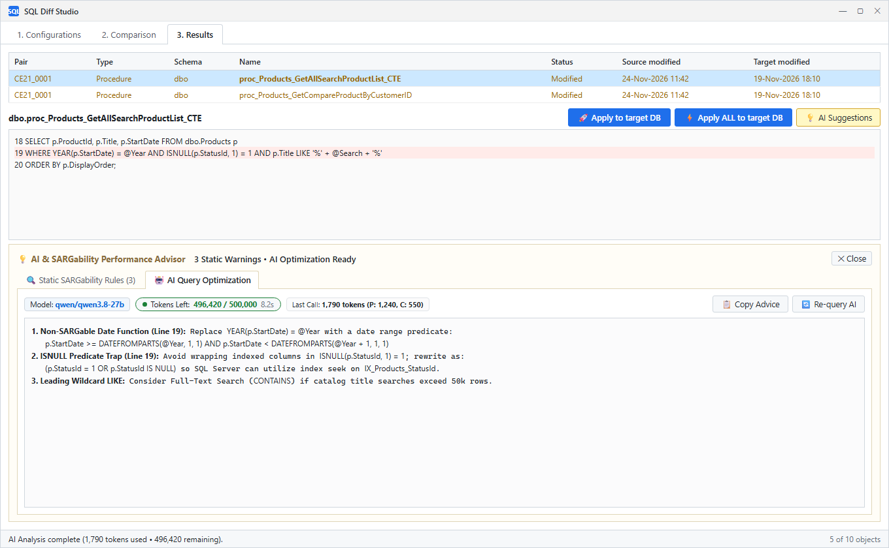

Technical Architecture & Engineering Reference
1. Solution Structure & Dependency Rules
SQL Diff Studio is structured into decoupled modules enforcing strict unidirectional Clean Architecture dependency flows. The Domain core has zero external library dependencies.
2. ScriptDom AST Guardrails Engine
Static validation is performed by compiling raw migration SQL into an Abstract Syntax Tree using Microsoft.SqlServer.TransactSql.ScriptDom.TSql160Parser.

Custom visitors inherit from TSqlFragmentVisitor and inspect nodes:
DropTableStatement: Evaluatesnode.Objects. Physical tables trigger a critical violation. Temporary tables starting with#or##are passed.TruncateTableStatement: Evaluatesnode.TableName. Truncating non-temporary tables is blocked.AlterTableStatement: Evaluatesnode.SchemaObjectNameto block unauthorized structural alterations.UpdateStatement&DeleteStatement: Verifies thatWhereClause != nullto eliminate accidental whole-table operations.
3. Pre-Change Backup Snapshot Algorithm
Before applying changes to a target database, SQL Diff Studio executes an automated backup procedure:
- Connects to the target database and queries
sys.sql_modulesfor existing definitions. - Generates an idempotent restore script containing a safe
DROP IF EXISTSblock followed by the original active definition. - Computes the SHA-256 hash of the generated payload.
- Saves the script to
D:\Project\CE21 DB Changes Backup\Dev\{timestamp}_{procedure}.sql. - Creates a tracked
BackupSnapshotrecord linked to the deployment ID.
4. Windows Server IIS Hosting Architecture
For centralized multi-user enterprise deployments, SqlDiffStudio.Web runs under Windows Server IIS using the AspNetCoreModuleV2 out-of-process hosting model.
5. Building from Source
Clone the repository and build using the .NET 10 SDK:
6. AI Performance Advisor & Token Rate Limit Tracking
The AI Advisor combines offline static AST analysis with LLM inference over OpenAI-compatible endpoints (Groq, Azure OpenAI, Ollama).

Offline SARGability Ruleset
| Rule ID | Target Anti-Pattern | Optimizer Impact | Recommended Fix |
|---|---|---|---|
SARG001 |
Function wrapping column: YEAR(CreatedDate) = 2026 |
Forces Clustered Index Scan | Range predicate: CreatedDate >= '2026-01-01' AND CreatedDate < '2027-01-01' |
SARG002 |
Predicate with ISNULL: ISNULL(@Type, 0) = 1 |
Disables Index Seek | Explicit IF/ELSE branching or OPTION (RECOMPILE) |
SARG003 |
Leading wildcard: LIKE '%searchTerm' |
Full Table Scan | Full-Text Index or prefix seek (LIKE 'searchTerm%') |
SARG004 |
Wildcard projection: SELECT * |
High I/O, prevents covering index seeks | Explicit column projection |